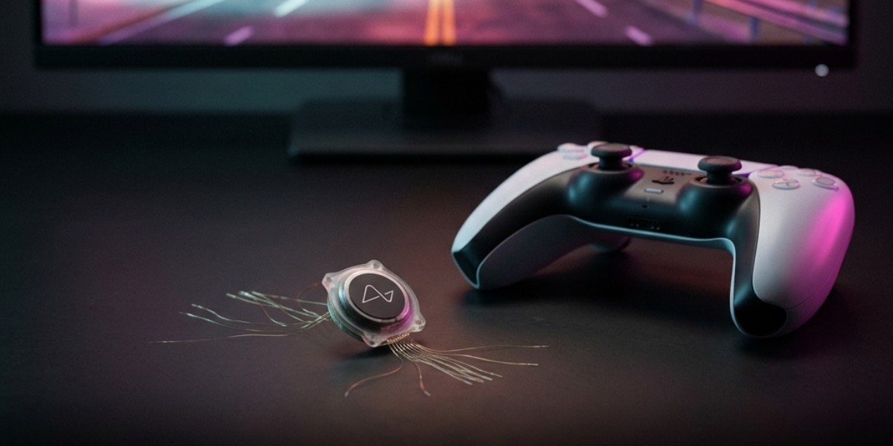

Geekotidien · Édition du 25 novembre 2026
GTA 6 avec Neuralink
Un homme privé de l'usage de ses bras joue à GTA 6 grâce à l'implant N1

Une vidéo publiée sur le compte X de Neuralink montre un homme privé de l'usage de ses bras jouer à GTA 6, le jeu de Rockstar Games, grâce à l'implant cérébral N1.
On le voit piloter un hors-bord, faire voler un hydravion et participer à une bagarre à mains nues. Avant l'opération, il ne pouvait jouer qu'avec « un bâton buccal et un iPad ». Le patient n'est pas nommé.
Neuralink indique une liste d'attente d'environ 10 000 personnes fin 2025. L'article cite aussi Noland Arbaugh, premier implanté, et Kenneth Shock, atteint de SLA.
L'amélioration des jeux de Noland Arbaugh est présentée « selon les informations disponibles », sans source précise. Pour Kenneth Shock, l'article indique qu'il a pu parler en mars ; l'année est à vérifier.
La source est unique : la vidéo publiée par l'entreprise. Aucune vérification indépendante n'est donnée.
Le + : Ces images viennent d'une vidéo publiée par Neuralink : c'est une communication de l'entreprise.